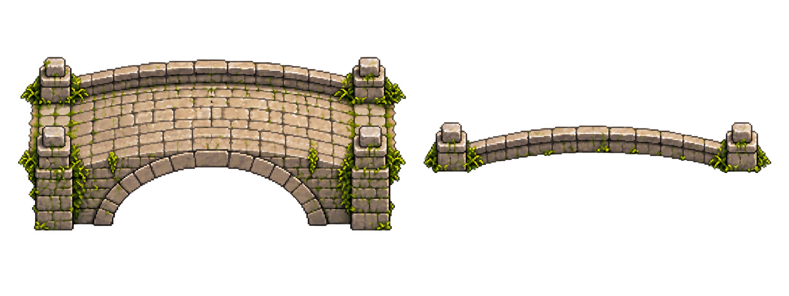

Cầu đá Bình Minh · Thân và lan can trước r024
Mẫu cầu riêng theo r009. Khung dưới kiểm tra lớp vẽ và actor đi qua, chưa cầu tích hợp vào map 2.5D. Cảnh chính giữ nguyên. Không mặc định hai lớp nguồn đã khớp hoàn toàn.
Nhấp khung rồi A/D hoặc ←/→ để đi thử; thao tác sẽ tắt tự động. Nhân vật đi giữa lớp thân và lan can trước. Nước phải nhìn xuyên khoảng vòm, không được vẽ trong sprite cầu.
Nguồn thân và lan can

Hồ sơ 252 và checklist · Nguồn và prompt